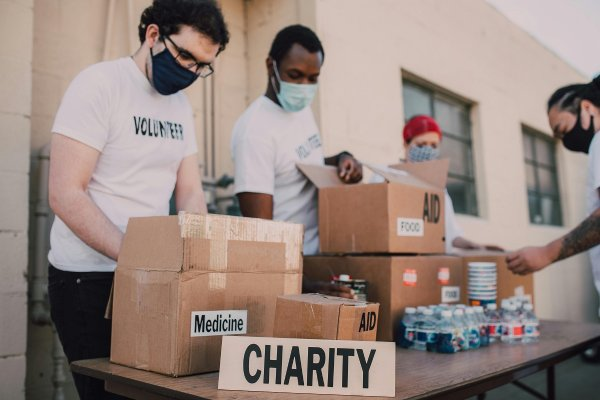
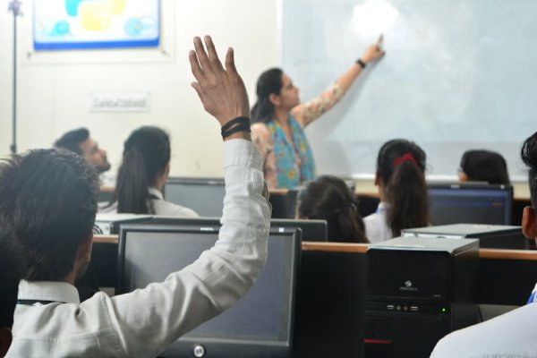

Projeto Alimentação Solidária
Focado na distribuição de refeições para famílias em situação de vulnerabilidade na região central. Nossa meta é 5.000 refeições por mês.

Voluntários Necessários: Necessitando de 15 voluntários!.
Nós da Transformando Vidas somos dedicados a construir um futuro mais justo e equitativo, atuando na linha de frente para apoiar comunidades vulneráveis por meio de educação e alimentação. Nossos projetos de impacto estão ativos e precisam do seu apoio para crescer e mudar a realidade de milhares de famílias e jovens.
Nossos projetos de impacto estão ativos e crescentes, e o sucesso deles depende diretamente da sua colaboração. Explore as nossas duas frentes de trabalho abaixo e descubra como a sua doação ou o seu tempo pode mudar a realidade de milhares de famílias e jovens.
Focado na distribuição de refeições para famílias em situação de vulnerabilidade na região central. Nossa meta é 5.000 refeições por mês.

Voluntários Necessários: Necessitando de 15 voluntários!.
Oferecemos cursos básicos de informática e programação para jovens de 16 a 24 anos, preparando-os para o mercado de trabalho.

Próxima Turma: Inscrições abertas até 30 de novembro.
Temos diversas oportunidades que se encaixam na sua agenda e nas suas habilidades. Conheça as áreas e candidate-se hoje!
Você pode doar por PIX, cartão de crédito ou boleto. Toda ajuda faz a diferença!
Doar Agora